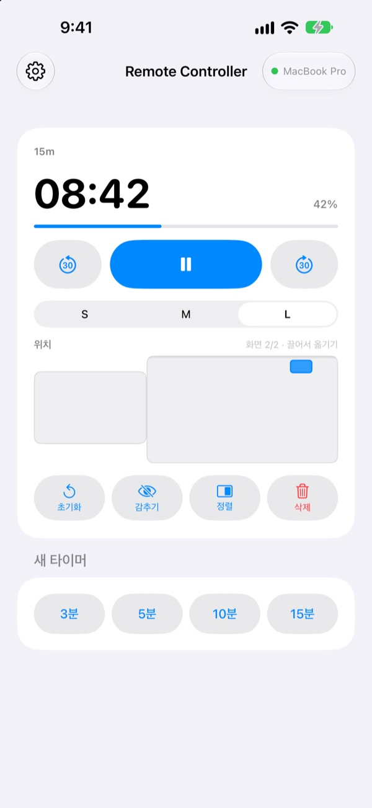
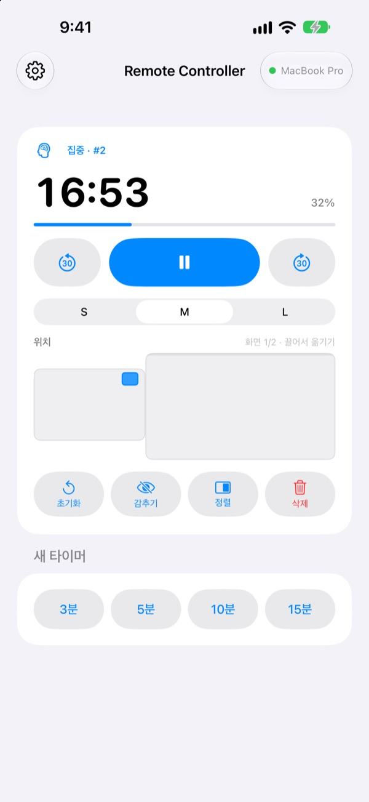
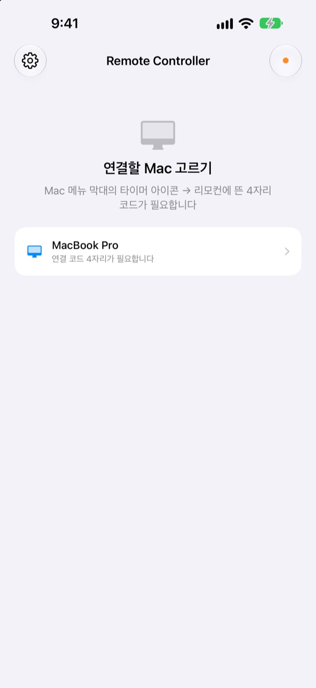

Mac에서 멀어져도
타이머는 손안에
Mac용 StickyPresenter의 타이머를 iPhone에서 다룹니다. 무대 앞으로 걸어 나가도 남은 시간을 보고, 멈추고, 30초를 더하고, 슬라이드를 가린 타이머를 옆으로 옮길 수 있습니다.
무료 · iOS 17 이상 · 같은 Wi‑Fi에서 StickyPresenter가 켜진 Mac이 필요합니다.

타이머를 만지려고 노트북으로 돌아가고 있나요?
발표가 길어져 시간을 늘리고 싶을 때, 타이머가 차트를 가리고 있을 때, 지금까지는 청중 앞에서 Mac으로 걸어가 트랙패드를 만져야 했습니다. Remote Controller가 있으면 그 자리에 선 채로 iPhone을 한 번 누르면 됩니다.
남은 시간을 보고 그 자리에서 고칩니다
남은 시간과 진행률이 1초마다 바뀌고, 뽀모도로라면 집중인지 휴식인지, 몇 번째 사이클인지도 보입니다.
이야기가 길어지면 30초를 더하고, 빨리 끝나면 30초를 뺍니다. 새 타이머는 3분, 5분, 10분, 15분 중에서 한 번에 시작하고, 위젯 크기를 S, M, L로 바꿔 뒷자리에서도 읽히게 합니다.

코드는 처음 한 번만 넣습니다
앱을 열면 같은 Wi‑Fi에서 StickyPresenter가 켜진 Mac이 목록에 뜹니다. 내 Mac을 고르고 Mac 메뉴 막대의 타이머 아이콘 ▸ 리모컨에 뜬 네 자리 코드를 넣으면 끝입니다.
다음부터는 앱만 열면 그 Mac에 저절로 붙습니다. 계정도 서버도 없이 두 기기가 로컬 네트워크에서 직접 주고받습니다.

시작은 세 단계면 됩니다
- 1
Mac에서 StickyPresenter를 켭니다
메뉴 막대에 타이머 아이콘이 보이면 준비된 것입니다. 창을 모두 닫아도 앱은 메뉴 막대에 남아 있습니다.
- 2
같은 Wi‑Fi에서 앱을 엽니다
로컬 네트워크 접근을 물으면 허용해 주세요. 그래야 Mac을 찾을 수 있습니다.
- 3
Mac을 고르고 코드를 넣습니다
Mac 메뉴 막대의 타이머 아이콘 ▸ 리모컨에 뜬 네 자리 연결 코드를 입력하면 바로 조작할 수 있습니다.
iPhone에서 할 수 있는 것
- 남은 시간
- 남은 시간, 진행률, 뽀모도로 집중·휴식과 사이클 번호를 1초마다
- 시작 · 일시정지
- 가운데 큰 버튼 하나로
- 30초 빼기 · 더하기
- 양옆 버튼으로 진행 중인 타이머를 바로 고칩니다
- 새 타이머
- 3분, 5분, 10분, 15분
- 크기
- 위젯을 S, M, L로
- 위치
- Mac 화면 배치를 줄여 그린 판에서 끌어 옮깁니다. 확장 디스플레이가 있으면 옆 화면으로도
- 감추기
- 청중에게서 위젯을 잠시 감춥니다
- 정렬
- 어디 있는지 놓친 위젯을 타이머 창 옆으로 불러옵니다
- 초기화 · 삭제
- 타이머를 처음으로 되돌리거나 지웁니다
- 단축어 · Siri
Remote Controller로 타이머 시작이라고 말하면 Mac에 타이머를 띄웁니다
리모컨은 Mac에서 돌고 있는 타이머만 다룹니다. 스티키 노트와 프롬프터 원고는 iPhone으로 보내지 않고, 슬라이드를 넘기는 기능은 없습니다.
자주 묻는 질문
iPhone 앱만으로 쓸 수 있나요?
아니요. Remote Controller는 Mac용 StickyPresenter의 리모컨이라, 같은 Wi‑Fi에 있는 Mac에서 StickyPresenter가 켜져 있어야 합니다. Mac 앱은 아래 링크나 앱 설정의 'Mac 앱 받기'에서 받을 수 있습니다.
Mac이 목록에 나타나지 않아요.
10초가 넘도록 Mac이 보이지 않으면 앱에 점검표가 뜹니다. 위에서부터 확인해 주세요. Mac에서 StickyPresenter가 켜져 있는지(메뉴 막대의 타이머 아이콘), 두 기기가 같은 Wi‑Fi인지(게스트 네트워크는 안 됩니다), iPhone의 설정 ▸ 개인정보 보호 및 보안 ▸ 로컬 네트워크에서 Remote Controller를 켰는지, Mac의 시스템 설정 ▸ 개인정보 보호 및 보안 ▸ 로컬 네트워크에서 StickyPresenter를 허용했는지, VPN이 꺼져 있는지.
연결 코드가 다르다고 나와요.
Mac 메뉴 막대의 타이머 아이콘 ▸ 리모컨에 지금 떠 있는 네 자리를 넣어 주세요. Mac에서 '연결 코드 새로 만들기'를 눌렀다면 새 코드만 맞습니다.
Mac이 이 iPhone을 기억하지 못한다고 나와요.
Mac에서 '기억한 리모컨 지우기'를 눌렀거나 StickyPresenter를 다시 설치한 경우입니다. 목록에서 Mac을 눌러 연결 코드를 한 번 더 넣으면 됩니다.
Mac에서 응답이 없다고 나와요.
Mac이 잠자기 상태가 아닌지, 두 기기가 같은 Wi‑Fi인지, VPN이 꺼져 있는지 확인해 주세요.
'Mac 앱 업데이트가 필요합니다'라고 떠요.
Mac의 StickyPresenter가 리모컨보다 오래된 버전입니다. Mac App Store에서 업데이트한 뒤 목록에서 다시 골라 주세요.
회의실에 Mac이 여러 대 있어도 괜찮나요?
괜찮습니다. 리모컨은 짝을 맺은 Mac 한 대에만 붙고, 코드를 모르는 리모컨은 내 Mac에 붙지 못합니다. 주고받는 내용은 같은 네트워크 안의 암호화된 직접 연결로만 오갑니다. 코드를 남에게 보여 준 적이 있다면 Mac에서 '연결 코드 새로 만들기'를 누르세요.
인터넷으로 무엇이 나가나요?
타이머와 명령은 로컬 네트워크 밖으로 나가지 않습니다. 인터넷으로 나가는 것은 익명 사용 통계, 크래시 보고, 직접 보내신 의견뿐입니다. 자세한 내용은 개인정보처리방침에 있습니다.
발표 직전에 Siri로 타이머를 띄울 수 있나요?
네. 'Remote Controller로 타이머 시작'이라고 말하거나 단축어 앱의 'Mac에서 타이머 시작'을 쓰면 앱이 열리고, Mac에 연결되는 즉시 정한 길이(1분부터 600분까지)의 타이머가 시작됩니다.
질문, 버그, 기능 제안은 mizzking75@gmail.com로 보내 주세요. 앱 왼쪽 위 톱니바퀴 ▸ 의견 보내기에서 iPhone으로 바로 보낼 수도 있습니다.